Caroline & Jackson
Ils sont beaux… beau en amitié, beau en amour, beau en générosité, beau en humour. Des mariés solaires !L’amour et l’union étaient leur priorité. Après une cérémonie à la mairie en petit comité, les voici de retour au Domaine de Cap’Bat pour une cérémonie laïque haute en émotions : leur histoire dévoilée, l’amour en pagaille et les rires partagés !
A Mont de Marsan, ce week-end là c’était la fête de la madeleine. Cette fête a résonné au mariage : bandanas bleus, musique traditionnelle, soirée jusqu’au petit matin.Tous ensemble, les mariés ont célébré un nouveau chapitre de leur vie.
« Nous recommandons à 1000%. Voilà bientôt 3 semaines que notre mariage, cette belle aventure passée aux côtés d'Alexandra est terminée. Plus qu'une organisatrice de mariage, Alexandra a été une épaule, une confidente, un soutien indéfectible sur laquelle nous avons pu compter tout au long de ces mois de préparation. Plus le jour J approchait, plus la pression montait et plus elle accomplissait son rôle indispensable avec bienveillance et simplicité. Alexandra maîtrise chacune des étapes et des tâches nécessaires à l'organisation d'un mariage : recherches, prises de contacts, coordination, négociation, décoration, mise en scène... et elle le fait avec sourire et humilité. C'est une véritable pépite que nous vous recommandons les yeux fermés ! Ses qualités tant professionnelles que personnelles vous permettront de profiter pleinement et en toute sérénité du plus beau jour de votre vie. Encore un immense merci »Caroline & Jackson
par Thomas Dalfarra


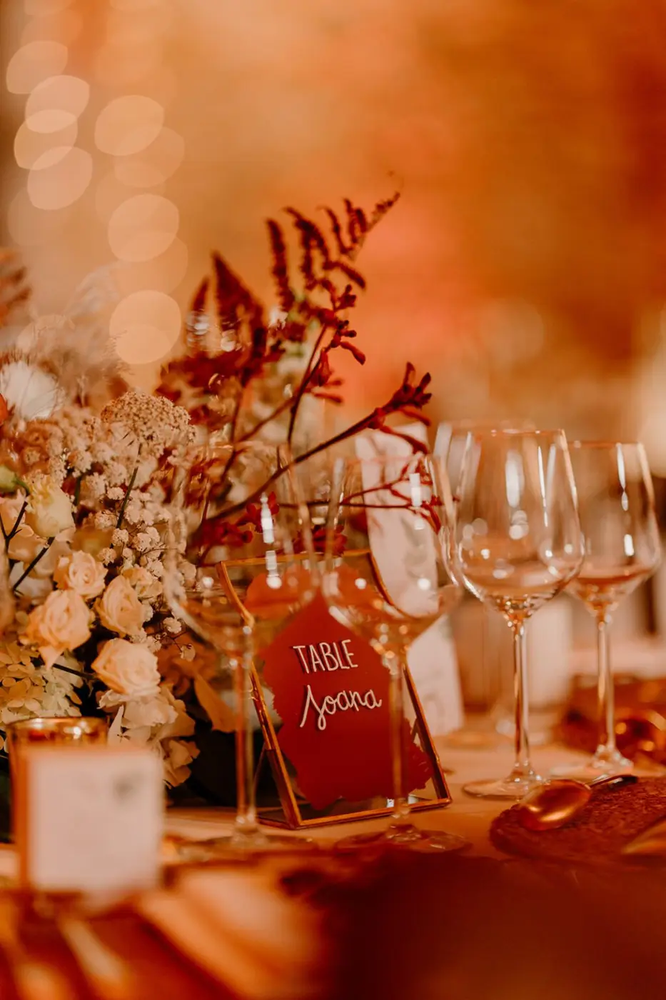

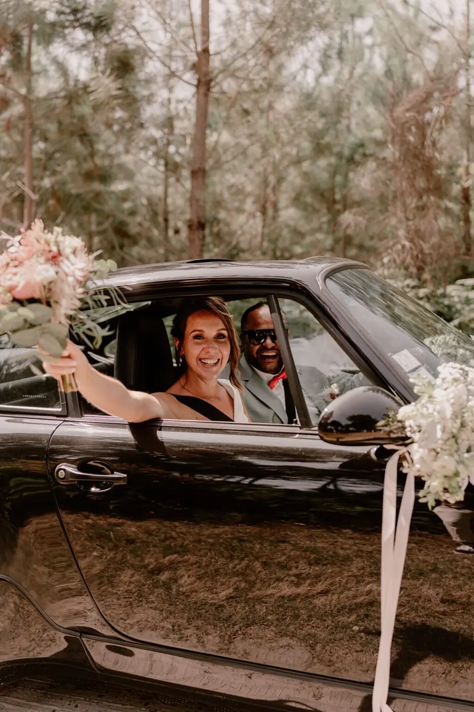

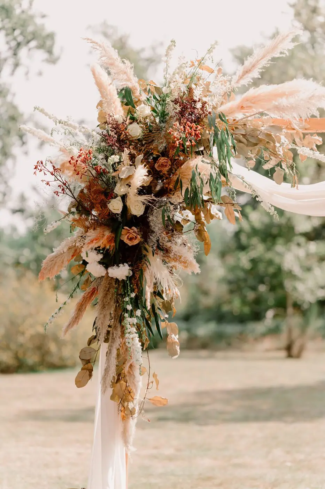
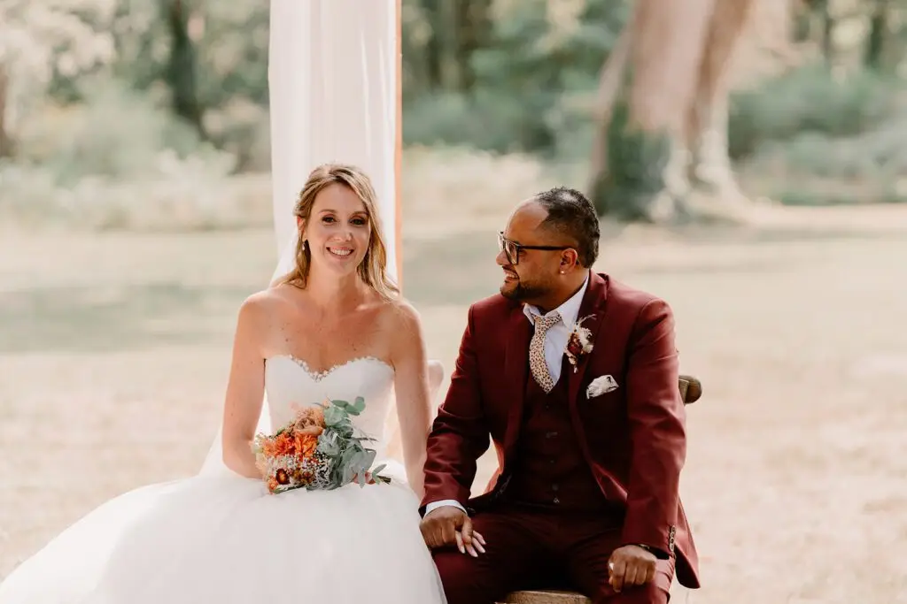
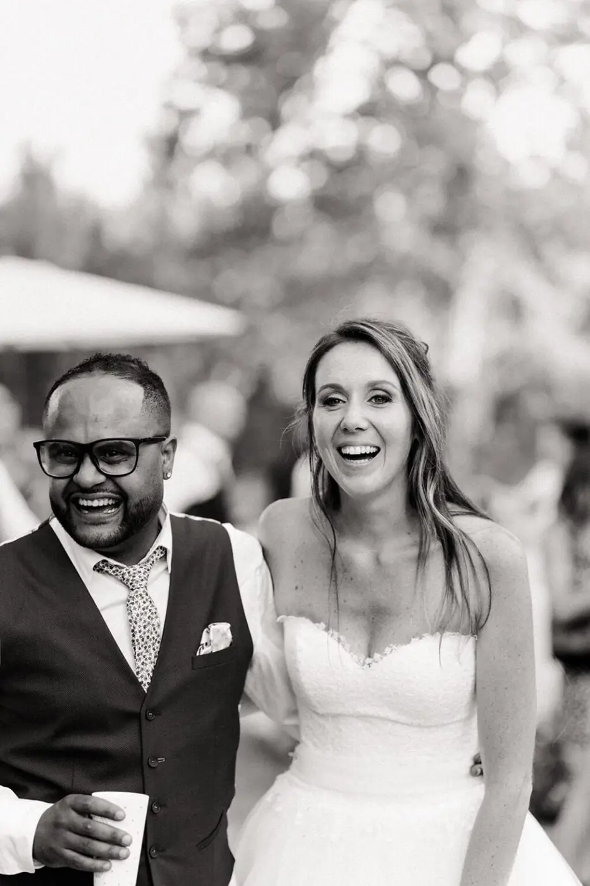

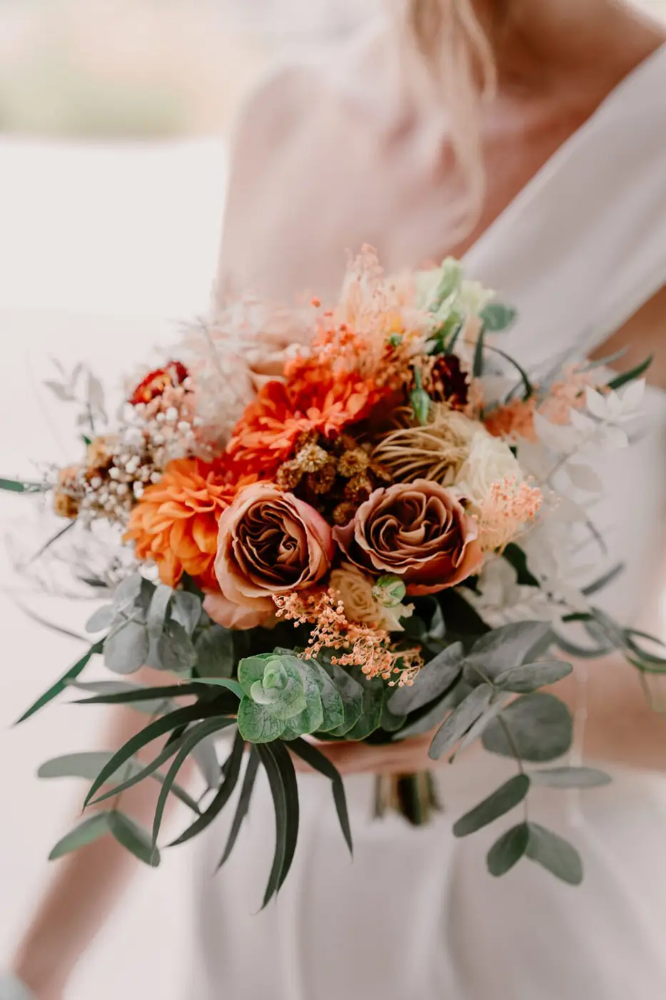

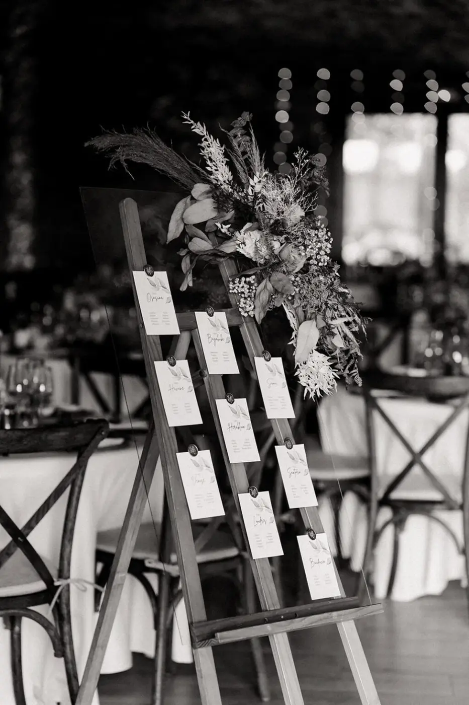

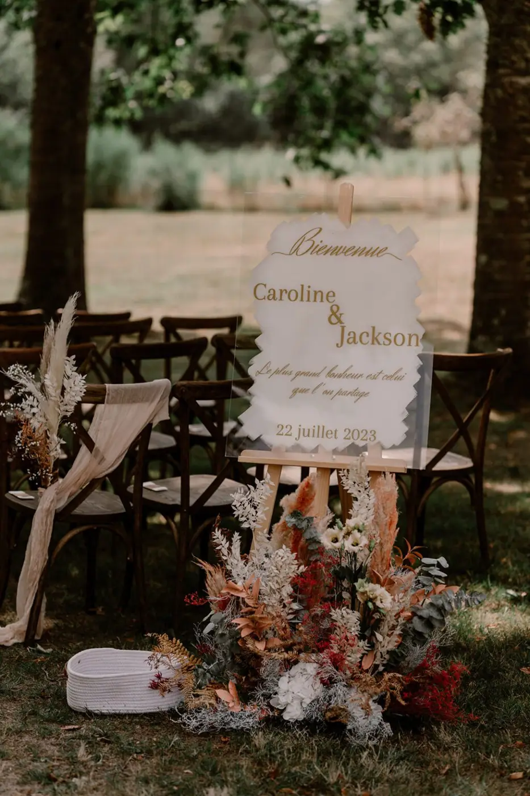
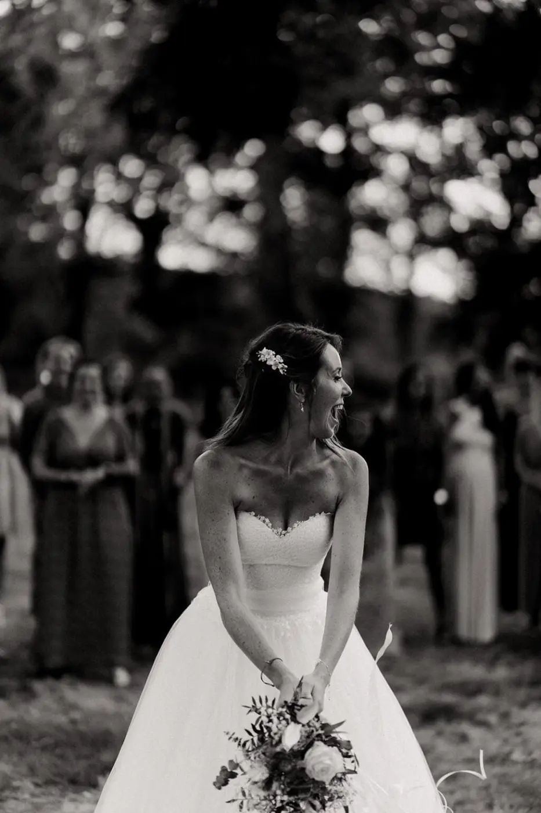
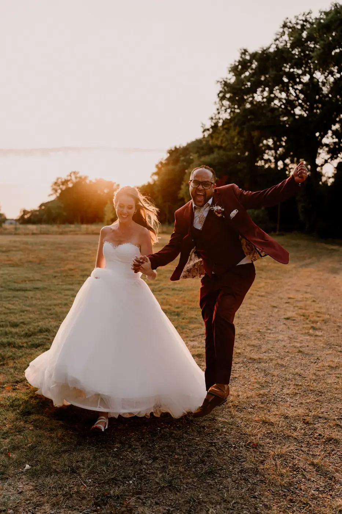

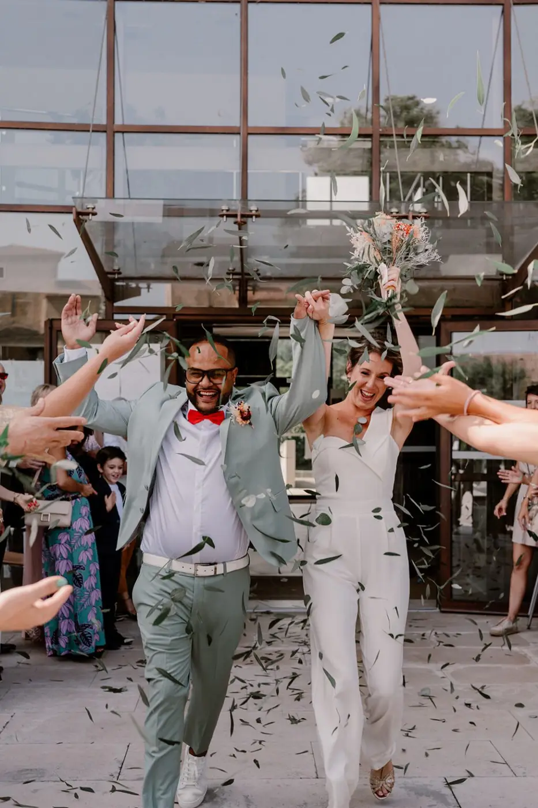


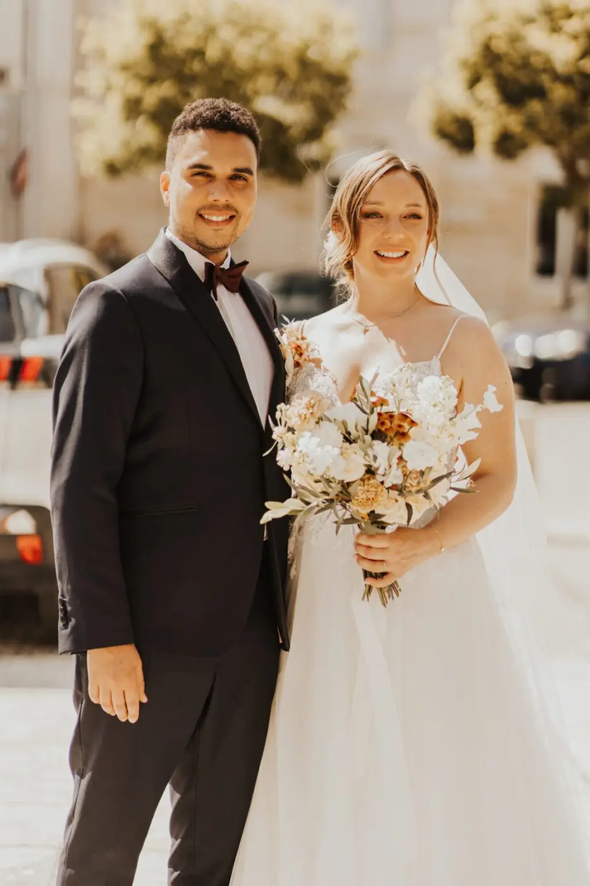
Jennifer & Laurent
Après une demande en mariage sur une petite plage vers la pointe du cap ferret en face de la dune du Pyla, Jennifer et Laurent ont organisé leur mariage dans ce…
Lire leur histoire © Tristan Perrier
© Tristan PerrierMarion & Charles
Le 25 mai 2022 , Marion & Charles se sont dit « oui » pour le reste de leur vie ! Un mariage sur le thème chic et bohème , coloré et raffiné, tout ce qu’on aime… Une…
Lire leur histoire